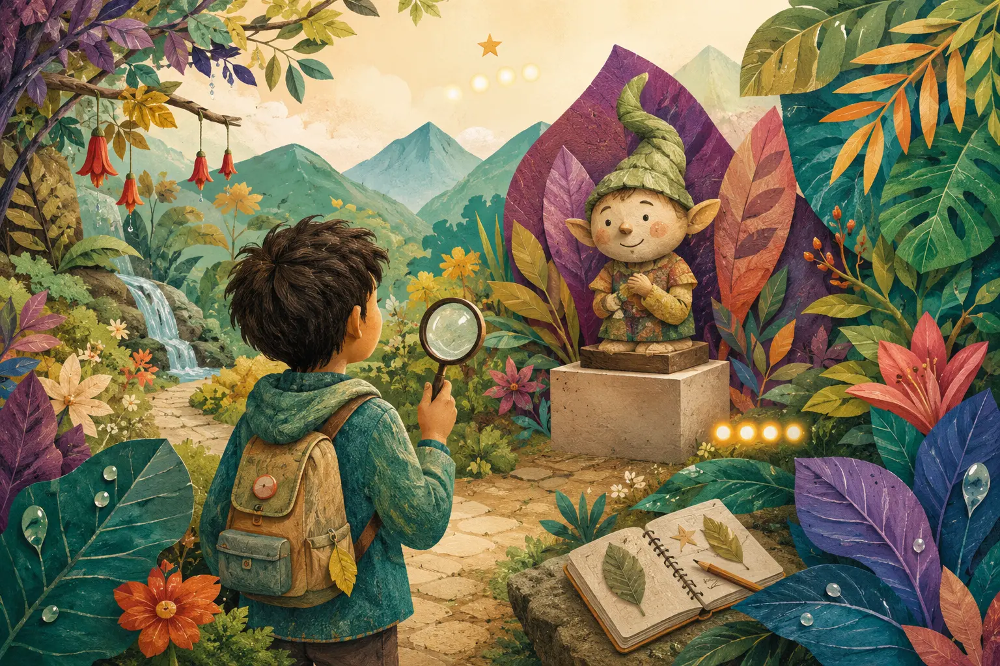

Buscadores de aventuras
La guía está escondida en el recorrido
Cada estación tiene su propio código QR. Encontralo, escanealo y abrirás únicamente el audio de ese lugar. Las estaciones no están reunidas aquí: para descubrirlas hay que observar y recorrer La Aldea Mágica.

¿Cómo comienza una misión?
1
Buscá la señal
Encontrá el código KIDS correspondiente a la estación.
2
Escaneá el QR
Se abrirá solamente el reproductor de ese punto.
3
Cumplí la misión
Escuchá, observá el lugar y compartí lo que descubriste.
No hay un botón para saltar a la siguiente estación. Cuando termine el audio, guardá el teléfono y volvé a explorar hasta encontrar el próximo QR.
Preparar la visita a La Aldea Mágica